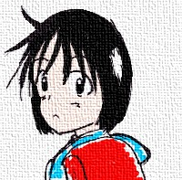
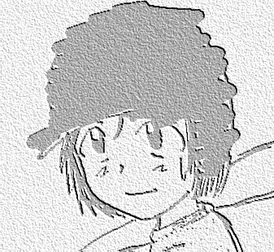

戻る
世代を超えて
作：自称暇人
第一回
1-1 「がんばる」
16年前…。
夏季高等学校野球選手権地方大会、決勝。
樋田山高校−平栄商陰高校。
スコアボードに並ぶ０の文字。
そして、7の下に一つだけ光る１という数字。
樋田山高校にとって、その１は何千何百…いや何万にも勝る大きさだった…。
樋田山高校９回最後の攻撃中。
ベンチには、背番号１を背負った青年がベンチにどっかりと腰を下ろしていた。
が、呼吸はかなり粗い。
それもそのはず、この夏最高の日差し。高い湿度…この環境の中で、ここまで先発ピッチャーとして
8回124球を投げ抜いてきたのだから。
あともう少しで完封のエースだったが、すでに限界が来ていた。
「ハァ、ハァ、ハァ………」
「ちょっと！大丈夫！」
青年の中で、ゆらぐ視界。そして、はっきりと聞こえるマネージャーの声。
「何言ってんだ…。あと一回だろ…」
「そうだけど…。ほら…、汗がまた…」
青年は肩に垂らしたタオルで、汗をゴシゴシと拭く。
「大丈夫だって…。あと一回ならいける…」
ベンチでは、汗だくの監督がグラウンドを見つめる。
「チェンジ！」
審判が９回の表の終了を告げる。それを聞いた青年はゆっくりと立ち上がる。
「ほんとに大丈夫？」
立ち上がった青年を、本当に青年の事だけを考えて心配するマネージャー。
「…大丈夫じゃなくて、他の言葉ないか？」
グラウンドを見ながら、一言つぶやく…。
「……あと一回……。がんばれ」
「おう、頑張ってるけど更に頑張れるかも！」
青年は疲労の体に勇気を120％を詰め込んでマウンドに登った。
1-2 「幸せな家庭」
藤立高志は23歳。
某企業に就職し、野球部に所属しあっという間にエースになった。
また、甲子園出場経験あり。
21歳で結婚まで果たし、今年第一児も誕生。
幸せの家庭を築いていた…。その日までは…。
だが、息子の誕生した年他界。交通事故だった。
1-3「バースデー」
キーンコーンカーンコン！
チャイムが樋田山第2小学校の、その日の学校終了を告げた。
５−２の教室もざわざわと騒がしくなり始める。
「なぁ、家帰ってから俺んちでゲームしねぇ？」
「今日学校でサッカーやろうぜ！」
そんな光景の中、府に落ちないと言う顔つきの生徒が一人…。
「どいつもこいつも、ゲーム…サッカー…あげくの果てには…」
他の人には聞こえないような声で毒づく、生徒は普通で言ったら可愛い女の子だった。
活発そうに見せるショートカット。世間一般で言ったらかわいいという顔立ち。
動きやすい、キャロットスカートを履いた少女は、机の上で頬杖を付きながら、サッカー・ゲームとばっか言っているクラスの男子を見つめる。
「ねぇ、駅前の文房具屋さんでね、こんなに可愛い消しゴム売ってるんだって。日野さんも今日買いに行かない？」
ほらきた、と心の中で呟く。だが、決して顔には出さない少女。
「パス！ごめん、今日はまっすぐ家に帰りたいんだ」
「そう…。本当にかわいいのに」
「ごめんね。今度行こう…」
今日はそういう気分じゃない…。日野と呼ばれた少女はランドセルを背負うと一人教室を出て行った。
買い物の誘いを断られた少女は、少し考えた顔をして一言漏らした。
「たまーに、日野さんってああいう顔するなぁ…」
11歳の少女というより、何か物思いにふける大人に少女には見えていた。

日野木の実11歳。正真正銘の生まれた時からの女の子。
彼女は８歳までは普通の女の子だった。
日野家に生まれてきた、普通の女の子…。
だが突然だった、心の奥底からその前の藤立高志としての記憶が蘇ったのは。
そう、つまり日野木の実の前世は藤立高志だった。
そして今日は、藤立高志の息子の誕生日の日だった。妻の誕生日、結婚記念日、自分の誕生日…。
何か、昔の記憶でやたら感傷的になる日がある、そういう日は日野木の実である事をボイコットする。
「おめでとう、隆行…」
1-4「さびしい気持ち」
翌日、学校はいつものように始まりを迎える。
「昨日はごめんね」
木の実は、そう言って昨日断った少女に両手を合わせてごめんのポーズを取る。
前世は男だったといっても、その記憶が出てきたのはほんの数年前、それまで女の子として育てられてきた木の実にとって女の子としての振る舞いは別に大した事ではなかった。
まぁ、時々恥ずかしい時もあるらしいが、今じゃ微妙に心の方も前世の時より変化しているみたいだ。
「ううん、別にいいよ。また今度行こう」
「うん」
時々、おかしな気分になることもしばしばらしいが…。
今日もいつものように学校の時計は回る。本当に思うのだが、時計というのは一定の刻を刻んでいるのだろうか…。
だが、今日も時計は同じスピードで回る。
そして、次の日も…。
また数日の日々が過ぎた。そんな、ある日の放課後だった。
今日もまた、前世が強く出てくる日、木の実は帰り道、一人で公園に寄っていた。
ブランコに座りながら、特に漕ぐのではなく足を軽く移動させて、小さくブランコを刻ませる。
何か、さびしげな表情で足元を見つめる木の実。
「やっぱ、このままじゃ駄目だな」
木の実は悩んでいた。
前世の藤立としての記憶に…。こんな数日置く事に干渉に浸ってたらおかしくなってしまいそうだ…。
いや、実際今の自分はどういう物なのか悩んでいたのかもしれない。
「過去を振り返るのは止めるか…」
何かさびしい気持ちが心を通り過ぎる。
1-5「とにかく捕れ」
一人の少年が、もう一人の気弱そうな少年を引っ張ってくる。
「おい！今日こそ、捕ってもらうぞ！」
「えぇ〜！もうちょっと慣れてからにしようよ〜！」
「あほ！そんな事言ってたら、一生捕れないぞ！」
「僕、キャッチャーなんてやだよ〜！！」
「うるへぇ！とにかくヤレ！」
少年の名前は谷塚清（たにづかきよし）。地元の少年野球チームのピッチャーをやっている。
もう一人の少年は三野峰太一（みのみね たいち）。友達の谷塚に半ば強制的に野球部に入れられたらしい。
「とにかくだ！うちのチームで俺の次の次の次の次の…えーっと…。とにかくチームで6番目に野球がうまいお前にボールを撮ってもらわなきゃ試合にゃならんのだ！！」
「なんで6番目なんだよ！それに、谷塚クンの玉捕れそうな人なら他にもいるじゃん！」
「みんなキャッチャーは嫌なんだってよ！しょうがねぇだろ！俺だって嫌なんだから！」
「ぶぅ…」
そんなこんなで、公園につくと二人はキャッチボールを始めた。
1-6「湧き上がる想い」
ふと、木の実は顔あげた。そこには二人の少年がキャッチボールをしている。
「キャッチボール…か……」
もう、何年していないだろう…。思えば息子とこんな事をしたかった、等と干渉に浸る。
「そういや、今の俺と同じ年なんだよな…」
ふと、今の自分に帰る。目の前でキャッチボールをしているのが、偶然にも木の実のクラスメートだからだ。
「野球やってる奴もいたか……………」
何か心の奥底で燃え上がる。…いや、今木の実は目の前でキャッチボールをする二人を見てどうしてもその気持ちが抑えられなくなった。
我慢できなくなった木の実はブランコを降りると二人に歩み寄った。
1-7「想い出す」
先に気づいたのは三野峰の方だった。
「あれ？日野さん」
続いて、谷塚が気づく。
「なんだ、日野じゃん」
そんな、少し驚いた風な二人に「やっほ」と答えた木の実はキャッチボールを続ける二人を見続けた。
「キャッチボール？」
「あぁ、あいつが下手の糞でな…」
「うるさいなぁ」
谷塚の言葉に、少し怒りながらも頼りない言葉で返す三野峰。そんなふたりは次に木の実から出た言葉に驚愕した。
「私にもやらせて」
２、３球キャッチボールが続く。無言のキャッチボールの後、谷塚が三野峰に言った。
「グローブ貸してやれよ」
その言葉を聞いて、三野峰が素直に「うん」と答えた。
「ありがとー」
木の実は三野峰からグローブを借りると、そのグローブをはめた。
しばし、グローブを見つめる。前世の記憶が蘇る。
初めてキャッチボールをした時。
初めての試合、初めての打席。初めての登板。
甲子園をかけての暑い夏の決勝。
甲子園のマウンド。
やっと木の実は想いだした。
いかに、自分が野球が好きだったか…。
1-8「誘い」
「最初は軽くいくぞ」
谷塚はそういうと、さっき三野峰に投げたボールよりもかなり遅い、山なりのボールを投げた。
ゆっくりと木の実に向かってボールが落ちてくる。
パシ。
なんなく、木の実の付けてるグラブにボールが収まると。投げた谷塚、見ていた三野峰は「おっ」と言った感じに驚く。
「案外、うめぇな…。もっと早いの行くぞ」
そう言って、木の実が返して来たボールをワンバウンドで受け取る。
驚いている二人もそうだが、木の実もちょっと驚いた顔になる。
谷塚までボールが届かなかった事に…。
「うん」
さっきより、警戒に谷塚が腕を振った。ボールはさっきよりも早く木の実のグラブに治まる。
そして木の実もさっきより早く腕を振る。ボールはしっかりと谷塚に届く…。
しばしキャッチボールが続く。
「案外やるな…。うちのチーム入らないか？」
「え…でも…」
「実力なら心配しなくてもいいぜ、キャッチボールしただけで三野峰より上手いのわかったから」
そういう問題ではなかった。
また野球を始めたら、昔の自分が捨てられない…。
「日野さん、絶対上手くなるよ！うんきっとだよ！」
三野峰も、自分がけなされた事なんか忘れていた。
「うーん…でもなぁ…」
心の中でひどく動揺していた木の実だった。
野球なんか始めたら…。また昔の自分に戻ってしまう。
3年前にあんなに苦しんだ自分に。
1-9「今の自分」
家に帰ってきた木の実は悩んでいた。
野球を始めたい気持ち。また、あのボールを追いかけたい。
女だからとかそういう気持ちはない…、女の子だって普通に野球をやっている子がいるのだから。
そういう問題じゃなくて、野球を始めると絶対前世の自分を思い出す。
そして、前世の自分がきっと今まで以上に今の自分が誰なのか悩む。
このまま、違う女の子としてやっていけそうか不安になる。
そんな時、ふと昔誰かに言われた言葉を思い出した。
「藤立くんって、ほんとに好きなんだね…。野球」
今まで、避けていたかもしれない。
野球なんてはじめたら…俺は俺を捨てきれないかもしれない。
そんな心配ばかりして、野球を避けていた。
女だからという問題以前に、野球をする事で木の実という女の子が居なくなってしまう不安。
今だって、いろいろ大切な物がある…。
俺は次の日、図書館に出かけた…。
1-10「前世の軌跡」
次の日曜日、木の実は図書館に足を運んだ。
16年前の新聞を一枚一枚開いていく。
と、ひとつの新聞記事で手が止まる。
スポーツの記事の場所だ。
第○○回夏季高校野球選手権。
一回戦、樋田山0−1福徳学園。
『樋田山藤立！熱投223球打線振るわず！』
甲子園、初めての一回戦。木の実には今でも覚えている。
8回までノーヒットピッチングも打線が点を取ってくれず、泥のように続いた15回。
最後に投げた失投をあっという間にスタンドに運ばれた。
「223球も投げたっけ…。最後以外覚えてねぇや…」
木の実はそう言って、クスっと笑った。
「あれから16年か…」
高校時代ライバルだった奴も、数人プロ野球入りを果たした。
今じゃそのライバルもプロのベテラン。もうすぐ引退も考える年になっている。
1-11「決めた」
図書館に行った夜、木の実はまた自分の部屋で前世を思い出していた。
そして、数時間ぼーっとした後、何か吹っ切れたようにすがすがしい顔に変わる。
「よし！決めた」
木の実は思い立ったように、ベッドから立ち上がると自分の部屋を出て行った。
急いで、二階の自分の部屋から一階のリビングに駆け下りる。リビングでは母親が夕食の支度をしていた。
「ねぇ！お母さん、野球やっていい？」
「野球！？」
お母さんはかなり驚いた顔をして木の実を見た。
決めた。
今の俺は日野木の実だが、前世の記憶がある今の状態も結局は木の実に変わらない。
俺が誰か迷ってるなんておかしい、今は俺だろうが俺が日野木の実なのだから。
そしてこれからも…。
だったらやりたい事やって何がいけない？
野球がやりたいって気持ちは結局は俺の…嫌、私の気持ちなのだから。
1-12「樋田マウンテンズ」
「日野木の実です。よろしくお願いします」
数人の少年は驚いた顔と、女の子が入ってきて嬉しい気持ちと入り混じったような顔をしている。
「ということで、今日から内の「樋田マウンテンズ」に入ることになった。みんな女の子だからってなめてるとレギュラー簡単に取られちゃうぞ！」
「はーい」
樋田マウンテンズの監督田口さん。今は野球のユニホームに身を包んでいるが、普段は普通のサラリーマンをしているごくごく普通の人らしい。
「えっと、木の実ちゃんは希望のポジションとかある？…やっぱピッチャー？」
「あ…特にないです」
「あ…そう、んじゃ、のちのち何処があってるか決めていこうか」
「はい」
木の実が入った樋田マウンテンズはこの地域で最弱を争う、たった4・5・6年生あわせて10人のリトルチーム。
10人のチームメイトの仲には、もちろん木の実を誘った谷塚・三野峰も入っている。
あとは4年生が3人。5年生が谷塚と三野峰以外に5人。6年生が2人となんともばらばらである。
この後、一応初心者の木の実に監督が一通りの基礎の基礎を教えてみるが、基礎の基礎はしっかり前世で理解していた木の実が理解できない訳がなかった。
あっというまに、基本的な事をマスターする木の実に監督は驚き顔だった。当然他のチームメイトも。
木の実自身も久しぶりの野球はとても楽しかった。
Hと書かれた帽子をかぶり、水色のユニホームに袖を通した今の自分の姿がなんとも懐かしく、でもどこか新鮮な感じがした。
1-13「知れ渡る」
「木の実ちゃん、野球部入ったの？」
「うそ！？日野さんが？」
木の実がリトルチームに入って、初めての練習に参加した次の日。木の実がリトルに入った事は教室に知れ渡っていた。
どうやら谷塚か三野峰が広めたらしい。
「ほ・本当だよ」
「うそ〜！！なんで〜！！」
「本当に？日野さん？」
「え…あ。うん、野球って面白いよ」
「お父さんがいつも見てるけど、ちっとも面白くないよ〜」
「そうそう、見たい番組みれなくなっちゃうし…」
木の実の口が少しばかり引きつる。何か言いたいが我慢しているらしい。
1-14「練習試合」
木の実がリトルに入ってから２週間たった頃。一つの練習試合が組まれた。
相手は樋田ファイターズ。樋田マウンテンズと最弱を争うチームで、今日は事実上のビリ決定戦らしい。
「ということで、今日は負けられない！なんとしても最下位はいかん！」
谷塚が力説するのを、なんとなく情けないなと思いながらも聞く木の実。
というものの、久しぶりの試合。出れない以前に、心はかなり躍っていた。
「キャプテン！今日は勝ちましょうよ！」
と、６年生のちょっと頼りない山村に拳を上げて言った谷塚だったが。キャプテンの山村は頼りなく「うん」と返しただけだった。
このキャプテンで大丈夫なのか心配になる。
1-15「最弱決定戦」
試合は樋田マウンテンズ、谷塚-三野峰のバッテリーで始まった。当然木の実はベンチからすたーとだった。
実力ははっきり言って、三野峰より上なのだがまぁしょうがないかとあきらめる木の実。
とりあえず、最弱は免れたい両チームの試合が始まった。
一回は両チームと0で始まったが２回でいきなり動き出す。
谷塚が連打を浴びてあっという間にノーアウト1・2塁。三野峰の全力投球を取れないということで、腕を振らずストライクを取りに来た谷塚の球を長打される。
あっという間に、樋田山ファイターズに2点追加。
その後も3点をとられて5-0。
その後、1点を返すもあっという間に6回を終了した。
そして、7回最後の樋田マウンテンズの攻撃。最初のバッターに代打が送られた。
「代打、日野」
ゆっくりとヘルメットをかぶる木の実。その顔は確かに笑みに満ちていた。
11年ぶりの打席。狙うは勿論長打。

あとがき
なんか野球物が書きたかったので書いてみました。
彼女はどこまで野球をやっていけるのか…。この先どういう出会いがあるのか…。
そんなことは俺の勝手です（爆
戻る
□ 感想はこちらに □